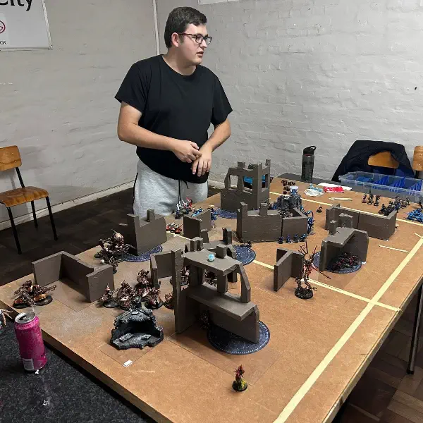
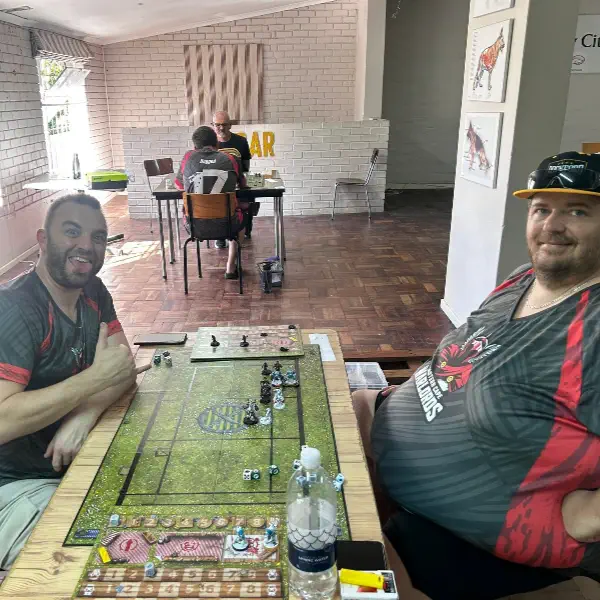
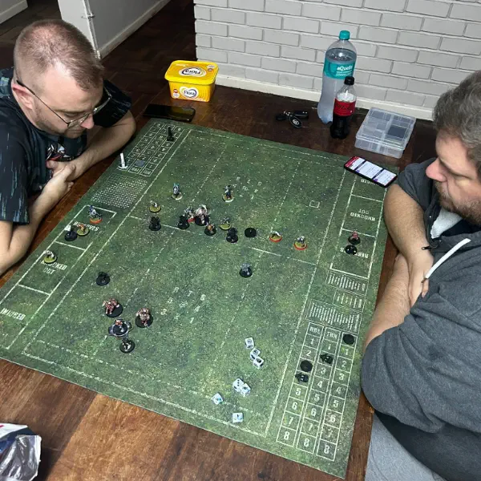
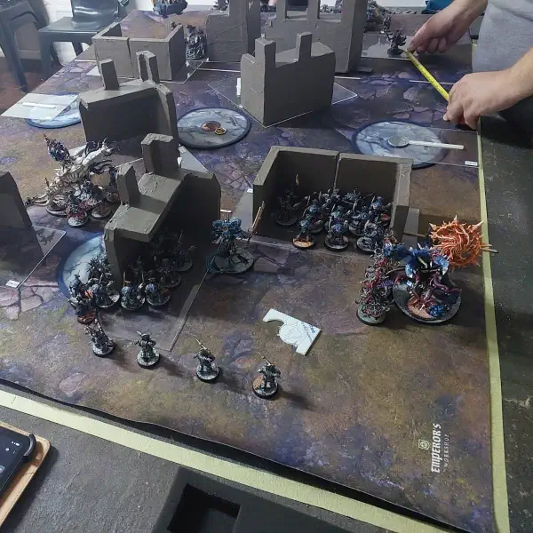
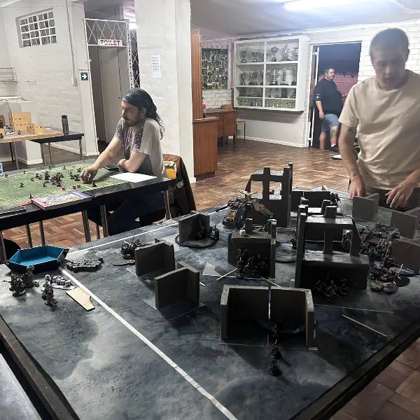
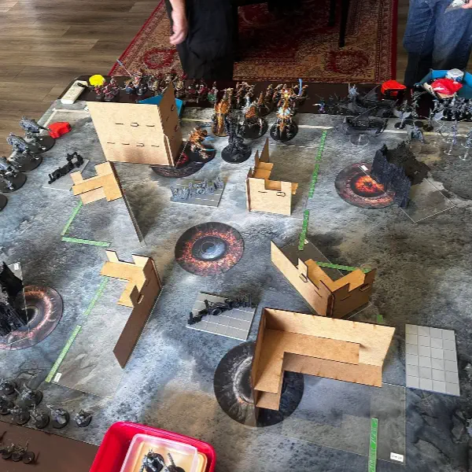
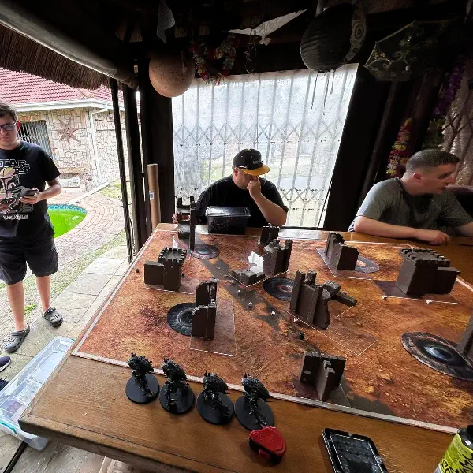

News from
the front.
Battle reports, painting showcases, and club updates — straight from our clubhouse floor. Everything below is real, pulled from our own Facebook page.
Quick links
Events Calendar
Every club night, tournament, campaign session and painting clinic — with dates, times, points limits and RSVP so you know exactly what's on before you drive out.
See what's coming up RESULTSLeague Standings
Current Blood Bowl table and 40k league positions, plus the archive of past seasons and champions — all in one place instead of buried in old posts below.
View the tablesLatest from the club

The High King, in his own words
"The High King does not just kill, he commands discipline. His axe, frozen solid… a daemon bound within, its fury locked beneath the ice. Silent. Controlled. Unstoppable. By Fang and Frost."

Be'lakor emerges from the shadows
Be'lakor, known as the Dark Master, was the first Daemon Prince ever created by the four Chaos Gods — Khorne, Tzeentch, Nurgle, and Slaanesh — who elevated him to immense power as their ultimate champion, but his ambition and desire for independence caused the gods to fear him, leading them to curse him so he could never openly rule and would instead be forced to manipulate events from the shadows.

Prepping for Mayhammer
Some prep being done for Mayhammer in Cape Town and Blood Bowl games being played to get a feel for different teams for Season 2.
40k: Death Guard vs Chaos Knights · Space Wolves vs Dark Angels · Necrons vs Drukhari Blood Bowl: Orcs vs Khorne · Vampires vs Dark Elves

First sevens tournament a smash hit
This weekend the club hosted the first sevens tournament. The tournament allowed for members to try out new teams and other players to try out Blood Bowl and see if they want to join for Season 2. And of course, the braai afterwards. Teams in the mix: Elves, Orcs, Khemri, Chorves, Humans, Halflings, Necromantic, Rats, Chaos.
Top 3: Tied 1st – Brett & Matt (Humans, Orcs) · 3rd – Jannie (Elves) · 4th – Steven John Ovens (Chaos Dwarves)
Next up: Season 2 of Blood Bowl using the new 3rd edition rules.
Sunday gaming, done
"The Sundays gaming done!!" — a shared post from our friends at The Gaming Guild, out on a Sunday session of their own.

Season one champions: the Fossil Fuels
With the conclusion of the inaugural Blood Bowl league, the winner has been crowned. The Fossil Fuels put on a dominant performance to cruise their way to the top.
Final standings: 1st – Fossil Fuels (Matt) · 2nd – The Lawyers of Hell (Daniel) · 3rd – Night Furies (Brett)
The first club league was a fun and successful event for everyone involved. The Fossil Fuels have extended Matt's contract to see if he can win back-to-back championships, while some teams parted ways with their coaches over "irreconcilable differences." Steven, head coach of the Polar Pain Train, is already bracing his team for a chorfing next season.
A 7s tournament will let coaches test out possible new jobs before Season 2 placements are decided — and with the Blood Bowl season winding down, focus is shifting back to 40k ahead of May, with a noticeable rise in Drukhari on the tables.

Back to regular schedule posting
The club has seen a massive interest in Blood Bowl over the last few months, with veteran players returning and new players joining the freshly formed league. So far there have been a few thrashings — whether from skill or simply the betrayal of dice, we may never know.
The Rats have raw speed keeping them atop the log ahead of the playoffs. The Amazons, led by Contessa, are showing new players what experience can do. The Undead keep shambling toward the top game after game, while the Lizardmen have taken some skinnings but pulled off skilful wins to sit comfortably in playoff position. The Vampires are cruising in with a few unlucky rolls along the way, and the Norse are having a great debut season — if they can hold onto a playoff spot. Both Orc teams turned this into a boxing match, hunting for the krump at every blitz, and the Chaos Dwarves had a rough season but did enough damage to look forward to a triumphant Season 2.

Club night vs. dice night
Wednesday club night with many players out for wargames due to DnD taking place — but nevertheless, the games continued, with some Blood Bowl and 40k learning games on the go.
Blood Bowl: Skaven vs Gnomes 40k: Dark Angels vs Ultramarines · Space Wolves vs Custodes

Another attempt at 3v3 40k
This time two new players captained the teams so experience levels stayed even. By pairing each new player with two veterans, everyone got through all phases of a higher-level game at a greater points value than usual.
Chaos Knights, Chaos Space Marines & Custodes vs Drukhari, Space Marines & Tyranids

Closing out the year with a mixed 3v3
A fun game format for the end-of-year break: 3v3 mixed armies and teams, with a random spin to assign both teams and armies — handing most players something unfamiliar to even out the skill level. 600pts per list, 1800pts total per side.
This format is being trialled ahead of a bigger tournament pairing new and experienced players together, so newer members can be guided through a larger game and learn from their partners.
Chaos Daemons, Chaos Knights & Space Marines vs Death Guard, Necrons & Tyranids
This page is a running log pulled from our own club Facebook page — real posts, real games, real questionable dice luck. Follow along there for updates between site refreshes.
Pull up a chair.
No army? No problem. We'll lend you one, teach you the rules and get a brush in your hand.